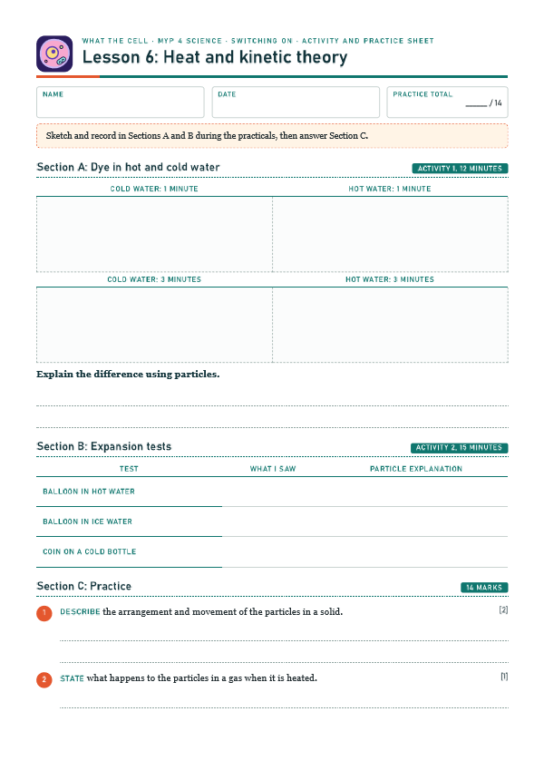

By the end of the lesson you can
- Describe the particles in solids, liquids and gases
- Explain temperature using the speed of particles
- Distinguish between heat (thermal energy) and temperature
- Explain why things expand when they are heated
Keys: arrows or a presentation clicker move the slides, F for full screen. Slides with a red dot have a video or simulation.
Videos (all 5 minutes or less)
- 1:50
Particle motion in matter
Next Generation Science. While you watch: How do the particles of a solid move? Slide 14.
- 4:12
Thermal expansion and thermal contraction
Point Source Science. While you watch: Give two examples of thermal expansion in the video. Slide 17.
Simulations
- Lab
- PhET
States of Matter: Basics
PhET, University of Colorado Boulder. Try the tasks on the simulation slide.
Print and practise

Activity and practice sheet
Used in the lesson’s activities, with practice questions. Your teacher has the answers.
Download (PDF)Lesson 6 slides
All 23 slides in one file, to read again or print. The video buttons on the slides open YouTube.
Download the slides (PDF)Revising? The Revision tab on the unit page has the unit notes and review.
Class activity pack
Everything to print for the lesson’s activities: picture cards, sorting mats, station cards with their kit lists, and the teacher’s set-up notes. Print it before class.
Download the activity pack (PDF)Notes: Heat and kinetic theory
particle
A tiny piece of matter: an atom or a molecule. For example: water is made of water molecules.
kinetic theory
All matter is made of particles that are always moving. For example: particles in steam move fast.
temperature
How hot something is; the average kinetic energy of its particles. For example: 30 degrees C on a hot day.
thermal energy (heat)
The total kinetic energy of all the particles. For example: a hot bath holds more than a hot cup of tea.
expansion
Getting bigger when heated, because particles move more and take up more space. For example: a bridge in the hot sun.
contraction
Getting smaller when cooled. For example: power lines sag less in winter.
temperature
A measure of how hot or cold something is. The hotter it is, the faster its particles move on average.. For example: measured in degrees Celsius (degrees C) with a thermometer.
expansion
Heated particles move more and push further apart, so the object gets bigger. For example: rails on a hot day.
Key words
| particle | a tiny piece of matter |
|---|---|
| kinetic theory | all matter is made of moving particles |
| temperature | how hot; the average kinetic energy of the particles |
| thermal energy (heat) | the total kinetic energy of all the particles |
| expansion | getting bigger when heated |
| contraction | getting smaller when cooled |
| absolute zero | -273 degrees C, the lowest possible temperature |